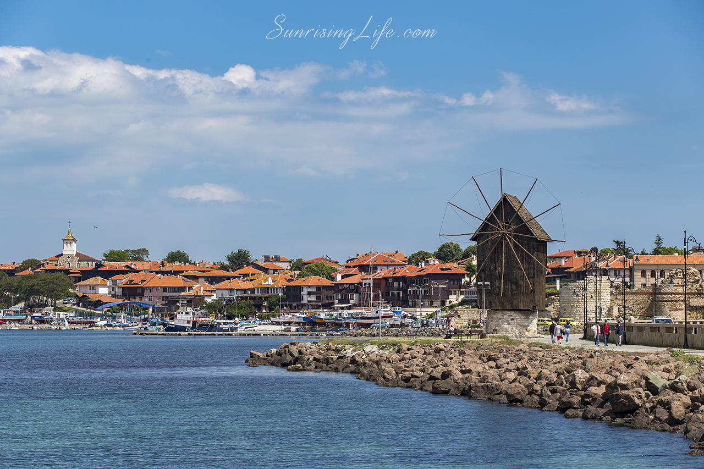

Едва ли има човек, който да не е чувал за Мадарския конник. Намира се на територията на ИАР – Мадара близо до днешното село Мадара, близо до Шумен. Той представлява скален релеф (барелеф), изсечен според датировката на паметника някъде през VIII век върху отвесна скала на 23 м височина. Мадарският конник е с размери на изображението 2,6 м височина и 3,1 м основа. В естествен размер са представени конник в ход надясно, до него има куче, което го следва и прободен с копие лъв, лежащ в предните крака на коня, а до тях и надписи на гръцки език. Тази композиция, символизира победата над врага, често изобразявана в античните художествени традиции (тракийски конник). Детайлите около датировката подкрепят и най-подкрепяната и разпространена теза за прабългарския произход на релефа, свързваща го с личността на хан Тервел.
Мадарският конник е единственият скален релеф в Европа от ранното Средновековие. Той е включен в списъка на Световното културно и природно наследство на ЮНЕСКО през 1979 г. и в Стоте национални туристически обекта на Българския туристически съюз.
На 29 юни 2008 г. след проведена национална анкета, Мадарският конник е обявен за глобален символ на България.
Научете повече:
Стария град Несебър

Несебър е град, разположен южно от Бургас (30 км) и освен, че е административно средище на община Несебър е и един от най-древните градове в Европа. Основан е върху скалист полуостров с дължина 850 м и ширина около 300 метра и заема площ от 25 хка. Свързва се посредством сушата чрез тесен провлак (насип).
Корените му датират някъде между III и II хилядолетие, когато тук съществува древно тракийско рибарска селище, наречено Менабрия. По-късно около VI век преселници от град Мегара основават тук своя колония, която наричат Месембрия. Изключително развит икономически, търговски и културен център през този период.
За първи път градът е присъединен към Българската държава през IXвек от хан Крум, за което свидетелства намерената мраморна колона с надпис “Крепост Месембрия” в Плиска. Името “Несебър” е дадено от славяните. Голям разцвет преживява градът по време на управлението на цар Симеон и неговите наследници. По времена Второто Българско царство градът отново е в ръцете на българите и изключително развитие преживява при управлението на Иван Александър. Оконателното завоевание на града под турско робство става през 1453 г, когато пада и Константинопол. През това време градът продължава своето развитие. Строят се нови църкви. Днес можем да видим много останали сгради от периода на Възраждането – вятърни мелници, типичните несебърски къщи, обществени бани и чешми.
През 1956 г. Несебър е обявен за културен и археологически резерват, а през 1983 г. запазените културни паметници в града са включени в списъка на ЮНЕСКО за световно културно и историческо наследство.
Разгледай, резервирай и посети Несебър възможно най-скоро!